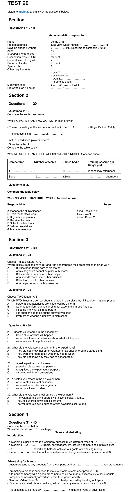

IELTS Listening: Test 20
Audio
This is the whole test, in one recording. In the exam you hear it once, so try a first listen without pausing.
Question book
Section 1
Questions 1–10
Accommodation request form
Name: Jenny Chan
Present address: Sea View Guest House, 1 Rd
Daytime phone number: 2 [NB Best lime to contact is 9-9:30 ]
Age: 19
Intended length of stay: 3
Occupation while in UK: student
General level of English: 4
Preferred location: in the 5
Special diet: 6
Other requirements:
own 7
own television
a/an 8
to be only guest
Maximum price: £ 9 a week
Preferred starting date: 10
Section 2
Questions 11–13
Complete the sentences below.
Write NO MORE THAN TWO WORDS for each answer.
The next meeting of the soccer club will be in the 11 in King's Park on 2 July.
The first event is a 12
At the final dinner, players receive 13
Section 3
Questions 21–23
Choose THREE letters, A-F.
Which THREE reasons have Bill and Ann not prepared their presentation in class yet?
- A Bill has been taking care of his mother
- B Ann's neighbors cannot help her with chores
- C Bill spends more time on other things
- D Ann spends more time on her business
- E Bill is too buy with other courses
- F Ann helps her mom with housework
Questions 24–25
Choose TWO letters, A-E.
Which TWO things are correct about the topic in their class that Bill and Ann have to present?
- A personal characteristics are influenced by uniform
- B wearing a uniform during carrying out experiment in Los Angeles
- C it seems like what Bill read before
- D it is about things to do during summer vacation
- E ProbIem of wearing a uniform in high school
Questions 26–30
26 Students volunteered in the experiment
- A Had a clue for what will happen
- B were not informed in advance about what will happen.
- C were arrested to a police station.
27 What did the volunteers encounter in the experiment?
- A They did not know that other volunteers had encountered the same thing.
- B They were informed about what they had to wear.
- C They did not know why they had to get charged.
28 In the old experiment, volunteers
- A played a role as arrested persons
- B recognised the experimental purpose.
- C came from different universities.
29 Arrested volunteers in the old experiment
- A were treated like real prisoners.
- B were told to act like prison guards.
- C were not allowed to sleep.
30 What did the volunteers feel during the experiment?
- A The volunteers playing guards with psychological trauma.
- B They all suffered psychological trauma
- C The volunteers playing prisoners with psychological trauma.
Section 4
Questions 31–40
Complete the notes below.
Write ONLY ONE WORD in each gap.
Sales and Marketing
Introduction
advertising is used to make a company successful via different types of 31
advertising 32 (radio, newspapers, TV, etc.) is not mentioned in this lecture
33 advertising helps to achieve our goals while saving money
the most common objective of the advertiser is to change customers' behaviour and 34
Advertising for brands
customers tend to buy products from a company as they 35 their brand name
promoting a brand is supposed to make customers remember product 36
a famous company with a good brand name could not market successfully other products
company names usually advertise before their goods and 37
SanFran Video Store 38 had promoted by handing out flyers
Chanel is successfully in advertising either company name or products such as 39
it is essential to be mutually 40 in different types of advertising
Show the original book pages (picture)

Tap or click the pages to open them full size in a new tab.
Answer sheet
Marking ignores capital letters and accepts plurals and the usual alternative answers. If your answer is right but not accepted, press My answer is also right under it.
Tapescript
Check your answers first, then the tapescript opens here.